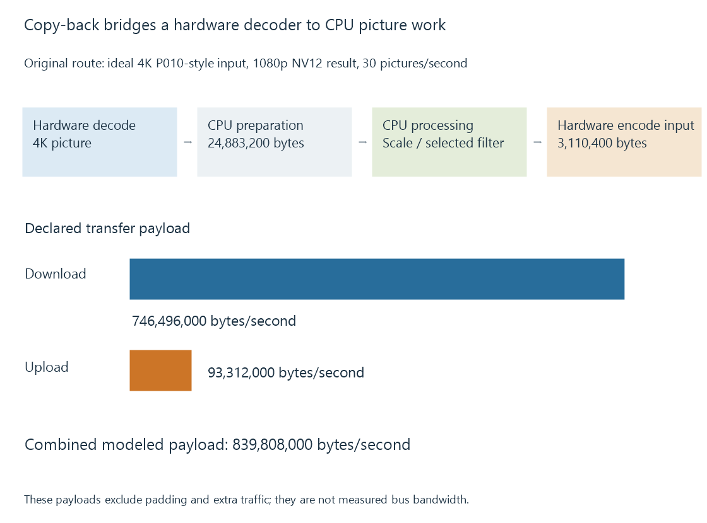

Copy-back video pipelines
A copy-back video path makes hardware-decoded pictures available in a CPU-oriented representation so software consumers can process them before later delivery or encoding.
A copy-back route gives a CPU-oriented consumer access to pictures reconstructed by a hardware decoder. The application obtains a suitable system-memory representation, applies the selected software work and supplies the next stage.
Hardware decoding remains hardware decoding. The copy-back describes a later picture handoff.
A CPU consumer can be the reason
A selected subtitle renderer, colour transform or other filter may need CPU-accessible picture data. A device surface is not necessarily that accepted input.
The route can therefore be:
Hardware decode
-> suitable CPU picture
-> software processing
-> compatible hardware-encoder input
-> compressed output

The preparation back into a device path is needed only when that chosen consumer requires it. A software encoder can use another relationship.
Calculate the sizes at each boundary
Use an original model that downloads an ideal 4K 4:2:0 picture with sixteen-bit sample storage, then prepares a 1080p 8-bit 4:2:0 result on the CPU.
At thirty pictures per second:
| Transfer | Bytes per picture | Declared payload per second |
|---|---|---|
| 4K picture to CPU | 24,883,200 | 746,496,000 |
| 1080p result to encoder path | 3,110,400 | 93,312,000 |
| Combined | — | 839,808,000 |
The upload is smaller because the model's output has both a quarter of the spatial area and half the sample storage width.
This calculation omits padding, intermediate copies, transfer overhead and compression. It does not establish an actual PCIe or integrated-memory measurement.
Moving the processor changes the boundary
If a compatible device filter scales before CPU access, the downloaded picture can be smaller. If the software filter requires original-size samples, that change can alter its intended result.
The algorithm's input and coordinate meaning therefore matter alongside the transfer size. A subtitle painted before scaling is not always equivalent to painting it afterward.
Likewise, a processing step can change storage format. The next encoder must accept the prepared result rather than infer its layout from the previous decoder.
A transfer has readiness and ownership
The CPU consumer needs a completed usable picture and any required memory-access/coherency arrangement. The producer storage also remains live while decoding references or other consumers need it.
An upload or imported encoder input has its own completion/lifetime contract. Submitting the prepared picture does not give immediate permission to overwrite it.
Keep the retained benefit visible
A copy-back session can reduce CPU reconstruction work while leaving substantial CPU filtering and transfer coordination. It is not necessarily equivalent to a fully software route.
See Also
- Zero-copy video pipelines and the boundary being avoided
- Mixed hardware and software filtering
- Hardware frame surfaces and GPU contexts
- Why hardware acceleration can still use the CPU
- The hardware decode-filter-encode pipeline